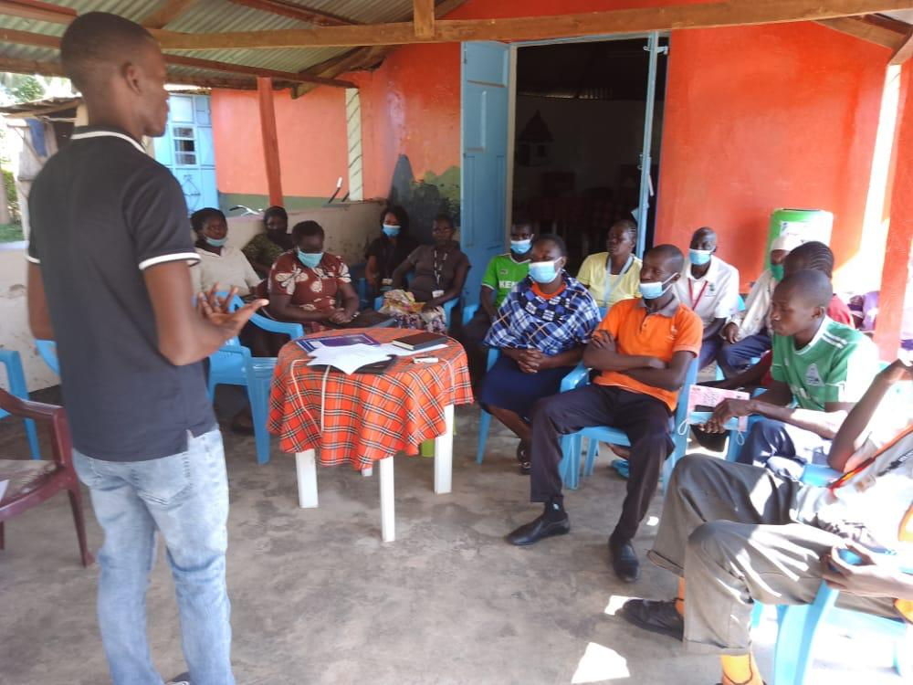

About us
About Us

Kyotera district gained autonomy in 2017 when it was cut off from Rakai district. It is home to Kalisizo where Uganda first registered the first known HIV/AIDS case. The district also hosts the Mutukula Border point that strategically supports transport and trade within the East African Community. The major economic activity in the district is agriculture with the main cash crop being coffee but not every person residing in the district has access to land. Kyotera district still grapples with alarming poverty amongst the populace. This has been attributed to a number of issues which include the high illiteracy levels, the ever increasing rates of child marriages; gender based discrimination on the basis of sex, HIV status, disability and education; unequal resource allocation and inadequate access to water.
Uganda has a dynamic gender responsive legal and policy framework aimed at reducing gender-based inequalities and vulnerabilities across the different social, economic and political spheres. Some of the international instruments that we can make reference to include the Convention on the Elimination of all forms of Discrimination against Women (CEDAW), the Beijing Platform for Action and the Global Agenda 2030 Sustainable Development Goals (SDGs) At the national level, the Uganda National Gender Policy, 2006, provides policy framework for addressing gender inequality. Uganda has made tremendous progress in. addressing gender inequalities and vulnerabilities through the establishment of social protection programs like Uganda Women Empowerment Program (UWEP), the Youth Livelihood Program (YLP) and the Labour Works Program among others. Whereas these policies and programs have expanded opportunities to attain gender equity and equality, gender biases remain which hinder full access and benefit from these programs. Another hurdle to economic empowerment is the limited access to financial loans to start small businesses is the prerequisite for presenting collateral at financial institutions.
According to the Annual Police Report of 2022, of the 1358 cases that were reported in Kyotera district, 28 were homicides, 71 cases were economic offences, 48 cases were sexual abuse cases, 110 cases were child related, 376 cases were thefts, 53 cases of robberies, 138 cases of assaults to mention but a few. The inference that can be drawn from this report is that the crimes bear a semblance of economic and social challenges and are a cause for concern. It suffices to note that the report doesn’t capture all the incidents as some matters remain unreported but paints a clear picture on the issues that need to be addressed.
MCEF has through various engagements with stakeholders in Kyotera and Rakai districts observed that there is a low uptake of formal education and some parents do not prioritise education especially for girls, Persons with Disabilities (PWDS), Persons Living with HIV/AIDs (PLWHIV/AIDs) and increases their vulnerability. Unfortunately, some of these ill-willed decisions are justified by negative customary norms and practices which also foster early marriages for girls. This combination of lack of formal education and early child bearing leaves girls more susceptible to Gender-based violence and limited access to livelihood options. This category of people usually does not benefit equally from resource allocation and are most times not even afforded property that can be gained through inheritance. Due to the negative perceptions that people attribute to PLWHIV/AIDs, most people that are infected loss hope and some stop accessing health care because they believe that if they are identified as having the virus, they lose out on a wide range of opportunities one of which is property acquisition through inheritance. Children affected and orphaned by HIV/AIDs are more exposed to exploitation, abuse and violence due to limited protection at national, community and family levels.
SDG 5 enjoins state parties to put in place measures that are jeered at elimination of all harmful practices including child marriage and forced marriage. Uganda has one of the highest rates of child marriages in Sub-Saharan Africa and this was exacerbated by the economic downturn caused by the COVID-19 pandemic and the closure of schools. Despite the various laws that have been put in place to curb these vices that foster gender inequalities, adherence and implementation remain a concern. People are not well versed with what the law stipulates and there is alarming impunity fostered by beliefs and harmful cultural practices.
Inspiration
MCEF was inspired by the keen observation that was made by the founder of MCEF amongst the youths, women and children of Matale village. The founder was driven by the need to advocate for change in mindset within the community upon realizing that at the centre of the abject poverty in the area were the high levels of illiteracy as there was a low uptake of the formal education, the high rates of child marriages, discrimination in resource allocation on the basis of disability, HIV status and harmful gender practices. Over the years, the key productive aspects of skills, knowledge, attitude and values have been inadequate amongst these vulnerable groups in the rural communities of Kyotera and Rakai districts but especially in Matale village. Therefore, an initiative to let people participate in empowerment drives evolved with the primary goal of leaving no one behind and creating equal opportunities. However, through trainings, provision of education and sensitization programs, the rural communities can be revived. The overall goal of these initiatives once they are thoroughly implemented, the communities will have valuable and productive members that lead to community growth and wellbeing.
Location
We are currently operating in rural communities of Kyotera and Rakia districts in the central region of Uganda.